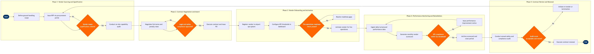

| Step | L4 Step Name | KPI / Target | Pain Point / Risk | Gate |
|---|---|---|---|---|
| 1.1 | Define ground handling scope and service requirements | Scope document published within 10 business days of trigger event | Scope creep when station-specific deicing or narrow-body-only ramp constraints are not captured early, leading to SLA gaps on first winter ops | |
| 1.2 | Issue RFP to pre-qualified ground handlers | RFP issued within 5 business days of scope sign-off; minimum 3 qualified bidders invited | Thin vendor panels at secondary airports (e.g. single-handler markets) reduce competitive tension and inflate unit rates by up to 25% vs hub markets | |
| 1.3 | Evaluate vendor proposals against qualification criteria | Evaluation completed within 15 business days of RFP close; minimum ISAGO score ≥ 80% | ISAGO certificates from some regional handlers are expired or cover a different station than the one being contracted, requiring manual verification against IATA ISAGO registry | ⚠ |
| 1.4 | Conduct on-site capability and safety audit | On-site audit completed within 20 business days of shortlist; zero critical findings to proceed | Handlers at code-share or alliance partner hubs may operate under local airport authority waivers that do not meet airline-specific safety standards, creating liability exposure | |
| 2.1 | Negotiate SLA terms, turnaround targets, and penalty rates | SLA negotiation concluded within 10 business days; penalty trigger at ≥3 consecutive monthly SLA breaches | Handlers resist penalty clauses tied to D0 when ATC or fuel delays (outside handler control) are not explicitly excluded in the SLA attribution model | |
| 2.2 | Conduct legal and aviation safety compliance review | Legal review cycle ≤ 15 business days; zero unresolved liability caps at execution | Jurisdictional variation in ground handling regulations (e.g. EU Groundhandling Directive 96/67/EC vs. FAA Part 139 requirements for US stations) extends review cycles for multi-station contracts | ⚠ |
| 2.3 | Execute contract and issue purchase order | PO issued within 2 business days of contract execution; contract visible in SAP Ariba within same day | Manual data re-entry when contracts are executed outside SAP Ariba (e.g. via email exchange) causes vendor master mismatches and delayed invoice matching | |
| 3.1 | Register vendor in airport operations system | Vendor profile configured and tested in SITA AMS ≥ 5 business days before go-live | SITA AMS vendor profiles are station-scoped; multi-station contracts require separate profile creation at each station, increasing setup time and risk of configuration inconsistencies | |
| 3.2 | Configure KPI monitoring thresholds in performance dashboard | Dashboard live and validated against 5 historical flights before go-live; alert latency ≤ 1 hour from event | Data latency between Amadeus Airport Management and Tableau can exceed 90 minutes during peak schedules, causing delayed breach detection and missed real-time intervention windows | |
| 3.3 | Conduct pre-operations readiness assessment | 100% of vendor staff complete airline safety induction before go-live; GSE serviceability ≥ 95% on day 1 | High staff turnover at ground handling contractors (industry average >40% p.a.) means safety induction records in SAP SuccessFactors are frequently out of date within weeks of go-live | ⚠ |
| 4.1 | Ingest daily turnaround performance data from ops systems | ≥ 98% of flights matched to vendor records within 24 hours; data completeness ≥ 99% | ACARS timestamp gaps on narrow-body short-haul sectors (sub-45-min turns) create ambiguous attribution when two ground handlers operate at adjacent stands simultaneously | |
| 4.2 | Generate monthly vendor performance scorecard | Scorecard issued by business day 5 of following month; D0 target ≥78%, bag delivery ≤20 min | Delay attribution disputes between airline and vendor are common where root-cause coding (e.g. IATA delay code 93 vs. 61) is entered by different parties, inflating apparent handler performance | |
| 4.3 | Assess KPI compliance against contracted SLA thresholds | Compliance assessment completed within 2 business days of scorecard publication; penalty invoice raised within 5 days of Red verdict | SLA cure periods (typically 30 days) allow repeated near-misses that never formally trigger penalties, masking systemic under-performance until a major disruption event | ⚠ |
| 4.4 | Issue formal performance improvement notice to vendor | PIP issued within 5 business days of Red verdict; vendor root-cause response required within 10 business days | Ground handlers often attribute performance failures to airline-side delays (late aircraft, late pax boarding) that are poorly documented, making PIP enforcement difficult without granular ACARS evidence | |
| 5.1 | Conduct annual vendor safety and compliance audit | Annual audit completed ≥ 90 days before contract renewal date; zero High-risk open findings at renewal | ISAGO audit cycles (every 2 years) do not align with annual contract reviews, creating a 12-month window where compliance status is unverified between ISAGO renewal and airline audit | |
| 5.2 | Evaluate contract renewal versus re-tender decision | Decision memo issued ≥ 60 days before contract expiry; re-tender initiated if 12-month D0 average < 75% | At captive single-handler airports, re-tender is not a credible threat, weakening commercial leverage and often resulting in rate increases at renewal regardless of performance history | ⚠ |
| 5.3 | Execute contract renewal or initiate new sourcing cycle | Contract renewal executed ≥ 30 days before expiry; zero lapse in contractual coverage at any station | Contract lapses during re-tender transitions force reliance on month-to-month SGHA extensions at full tariff rates, increasing ground handling costs by 15–30% until new contract is executed |